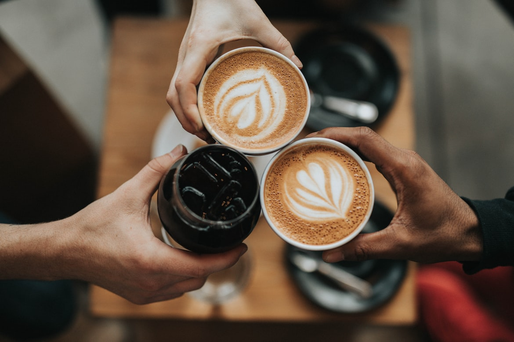
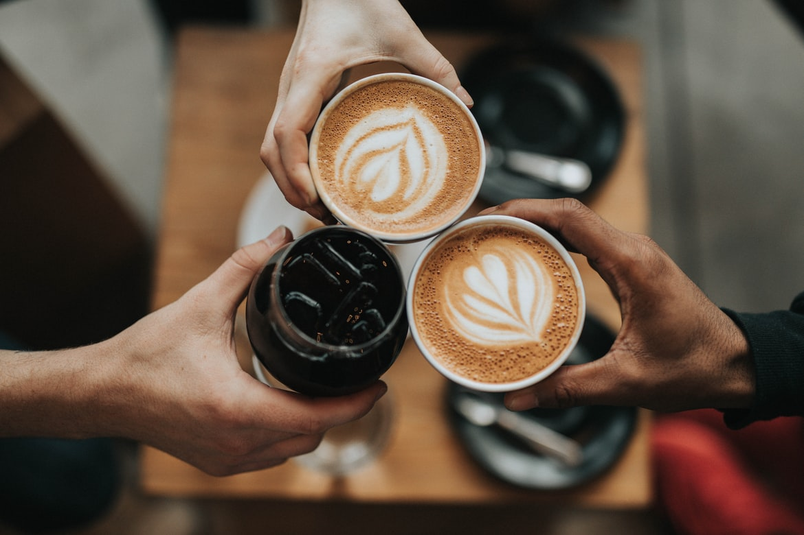
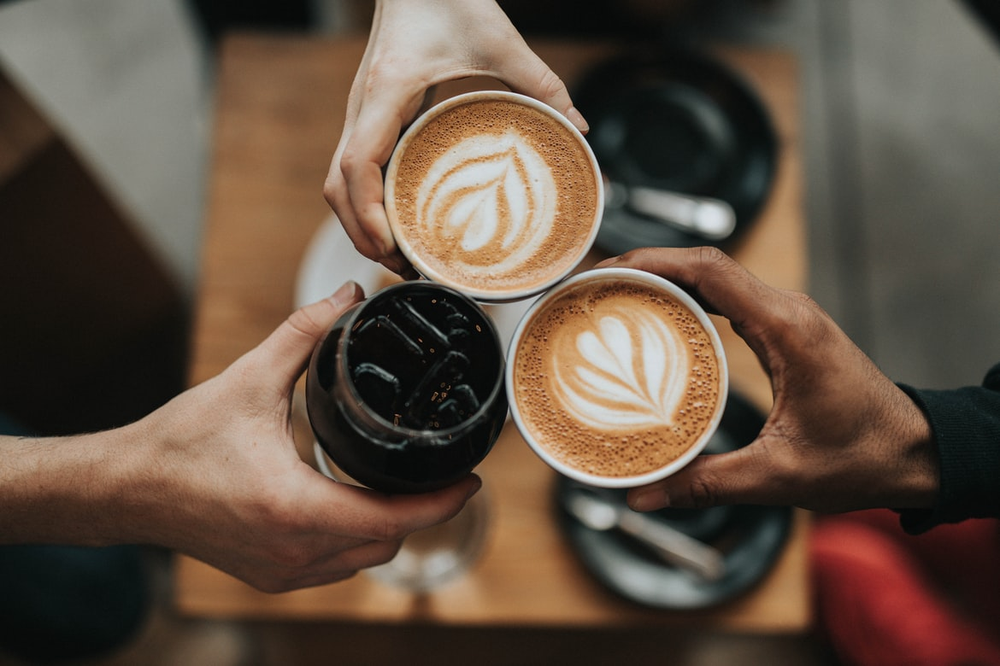
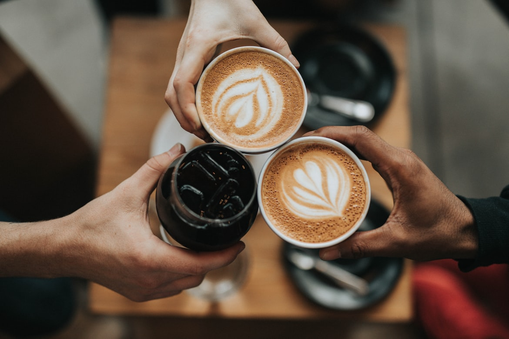

⇓⇓⇓

ランプの熱でお湯がさざめきロートと呼ばれるガラスの中をコーヒーが踊るドラマチックな抽出方法です。視覚的にも楽しめて、香り立ちのいいコーヒーができあがります。

オートメーションで、的確にコントロールされたプアオーバー システム。
クリーンで鮮やかな一杯をご提供します。
美しく完成されたデザインのケメックスで抽出されたコーヒーは、雑味が少なく風味豊かで香り立つコーヒーに仕上がります。
多彩な抽出方法をコーヒー豆に合わせて選ぶことで、味わいは変化します。
コーヒーの世界に溢れる素晴らしい魅力を、一緒に発見してみませんか。